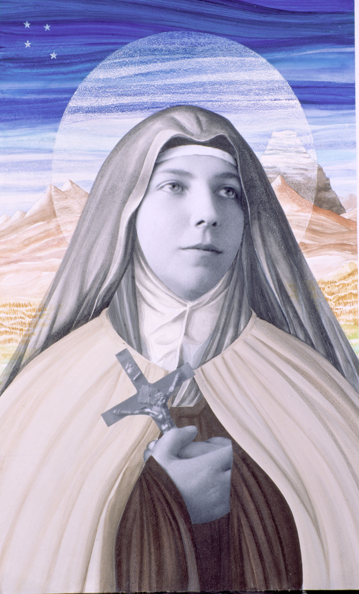

Chile properly has two saints, St. Teresa of the Andes and St. Albert Hurtado. They are the only ones who have reached the end of the path of the canonization process. Behind them are our blesseds, who are four: Laura Vicuña, Ceferino Namuncurá, José Agustín Fariña and María Crescencia Pérez. Before there are the venerables, at least six in the Chilean case, and the servants of God, who become about fifteen. There are also others who simply enjoy a "reputation for sanctity" although their causes have not been formally initiated. This article is about all of them, saints, blesseds, venerables, servants of God or people whose example of holiness marked, in some way, the permanent process of evangelization in this land and who make up the great mosaic of holiness in Chile.
San Alberto Hurtado
Back in Chile, in 1936 he began his teaching work at the university as a doctor in psychology and pedagogy. In 1942 he was appointed advisor in the area of youth of the Catholic Action organization, with which he traveled throughout the country founding youth assistance centers, leaving practically no province without visiting. Continuing with his social and catechetical work, in 1944 he founded the Hogar de Cristo, a center created with the purpose of giving shelter to the homeless. Because of his intense activity, Father Hurtado would become known as "the priest of the poor."
In 1948, when Marxist ideas threatened to spread to the most unprotected layers and the thriving Chilean working class through the unions, Alberto Hurtado created a Catholic union, Acción Sindical Chilena (ASICH), with the aim of resisting a political ideology that went against the values defended by the Catholic Church.
Inspired by the doctrine of the encyclical Quadragesimo Anno, he published several books and founded and directed the important magazine Message, which is still published today. His works include Is Chile a Catholic Country?, Christian Social Humanism in the Documents of the Catholic Hierarchy, Syndicalism, History, Theory and Practice, The Affective Crisis of Adolescence and The Priestly Crisis in Chile.
In 1977, the Chilean Catholic Church carried out the first procedures of the process for the beatification of Alberto Hurtado, which did not really begin its ordinary course until 1993, when Pope John Paul II gave his approval to the report on the cause of beatification. On October 10, 1994, Alberto Hurtado was beatified by Pope John Paul II; eleven years later, in October 2005, he was canonized by Benedict XVI. The feast of San Alberto Hurtado is celebrated on August 18.
Teresa de Los Andes
He studied at the College of the Sacred Heart (1907 - 1918). Deeply affective, she believed herself incapable of living separately from her own. However, he generously assumed the test of studying in boarding school the last three courses, as training for the definitive separation, which he would consummate on May 7, 1919, entering the Discalced Carmelites of the Andes.
At the age of 14 the Lord spoke to him saying that he wanted his heart only for Him, also giving him the vocation to Carmel. Within its preparation is the reading of Carmelite saints and correspondence with the Prioress of the Andes. At the age of 17 he exposes his Carmelite ideal "to suffer and pray" and with ardor he defends his contemplative life, which the world "labels as useless". He is excited to know that his sacrifice will serve to improve and purify the world..
As a Carmelite she was called Teresa of Jesus, not managing to live even a whole year in the convent. He died on April 12, 1920. The nuns claimed that she had already entered holy. So, in such a short time, he was able to consummate the race to holiness that he had begun very seriously long before his first communion..
"Christ, that madman of love, has driven me crazy," she said.
She was always ready to serve and sacrifice for others, especially for joy and happiness, to make virtue kind and attractive.
His life was entirely normal and balanced. He reached an enviable maturity integrating in the most harmonious synthesis the divine and the human: prayer, studies, home duties ... and sport, to which she was very fond, excelling in swimming and horse riding.
As a beautiful, friendly, sporty, cheerful, balanced, helpful and responsible young woman, Teresa de Los Andes is in an excellent position to lead young people after Christ, and to remind us all that it is necessary to fulfill the evangelical program of love to fulfill ourselves as persons.
Through his intercession the Lord is pouring out a copious rain of graces and favors of every kind and drawing to Himself innumerable prodigal sons. His shrine, visited by more than one hundred thousand pilgrims every month, has become the spiritual center of Chile.
Thus Teresa de Los Andes has been fulfilling the mission that was already recognized shortly after her death: to awaken hunger and thirst for God in our materialized world. Beatified by John Paul II in Santiago de Chile on April 3, 1987, she was solemnly canonized by the same Supreme Pontiff in Rome on March 21, 1993.